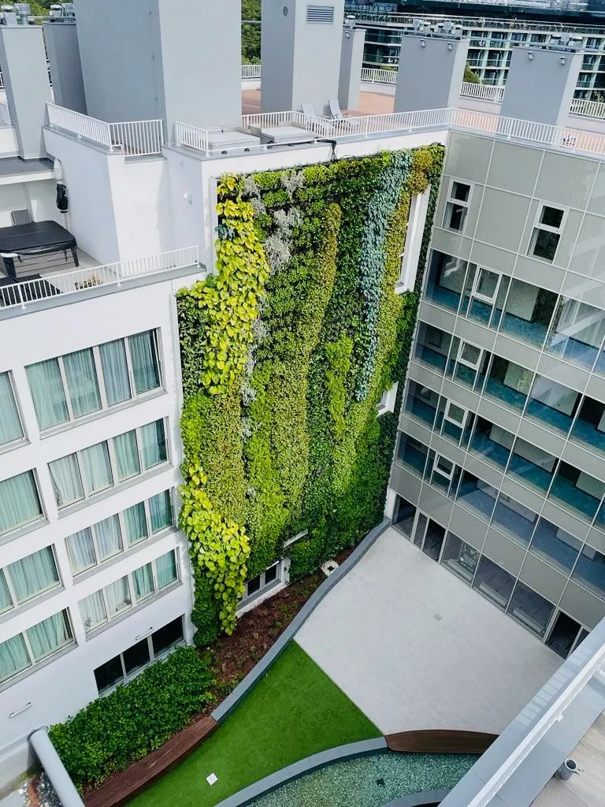

الواجهات الخضراء
الواجهات الخضراء هي حل مبتكر يقوم علي تغطية الأسطح العمودية بالنباتات. وتظهر أداًء ممتاًزا في المباني العامة مثل محطات القطار، والمكاتب الحكومية, والمستشفيات. تعمل الجدران الخضراء علي تحسين جودة الهواء, وتقليل الضوضاء، وتوفير عزل حراري طبيعي، مما ينعكس علي خفض تكاليف الطاقة. كما أنها تحدث تأثير مهدئا يعزز من رفاهية المستخدمين, ويسهم في تعزيز القيم البيئية.

المبناني السكنية, والأعمال التجارية, وغيرها الكثير
تسهم الواجهات النباتية في الفنادق والمباني المكتبية والمجمعات السكنية في تعزيز مكانة العقار، من خالل خلق صورة عصرية وصديقة للبيئة. تعمل الجدران الخضراء علي تحسين المناخ الداخلي، وتعزيز اإلبداع وراحة المستخدمين، وجذب انتباه العملاء. وبفضل أنظمتها المعيارية، فإنها سهلة التركيب والصيانة، بينما تبرز جمالّياتها الطابع الفريد لكل مساحة.
كيف يتم إنتاجه
التقنية
تعد Wall Green حلا مبتكرا في مجال البناء المستدام، حيث يتيح إنشاء واجهات خضراء حّية. يعتمد النظام علي وحدات معيارية مصنوعة من الفولاذ المقاوم للصدأ مع طبقة داخلية من صوف الصخور (Rockwool)، مما يضمن المتانة والكفاءة، إضاف الي السلامة من الحرائق.
يمثل هذا الموديل مزيجا ذكًيا من المتانة والكفاءة والجماليات. وقد ُصّمم مع مراعاة الاستدامة وراحة المستخدم، ليقدم أداًء طويل الأمد بينما يعزز المظهر الجمالي لأي مساحة. وفيما يلي تجد الميزات الرئيسية لمنتجنا.
الأبعاد والتكوين
يبلغ عرض الوحدة الواحدة 25 سم وارتفاعها 50 سم، مما يتيح تصميم جدران مرنة بمختلف الأحجام والأشكال. يمكن دمج الوحدات وتنسيقها بحرية لتناسب أي أبعاد مطلوبة، مما يمنح المعماريين والمصممين حرية كاملة في ابتكار واجهات مميزة . حتوي كل متر مربع من النظام علي 64 نبتة، مما يضمن سطحا أخضر كثيًفا وجذاًبا بصريا بلغ وزن النظام المعياري عند التشّبع الكامل حوالي 60 كجم/م
مواد البناء

الفوالذ المقاوم للصدأ
يوفر هذا النوع من الستانلس ستيل مقاومة استثنائية للتآكل، وهو عامل أساسي لضمان طول عمر النظام. كما ُيقدر الفوالذ الأوستنيتي لقوته ومتانته العالية، مما يجعله خياًرا مثالًيا للتطبيقات الخارجية.
طبقة صوف الصخور(Rockwool)
باعتباره وسًطا للنمو، يوفر صوف الصخور ظروفا لنمو النباتات بشكل صحي. فهو يدعم النمو األمثل للجذور ويحافظ عىل توازن الرطوبة المناسب، مع السماح بمرور الهواء بشكل فّعال — وهو عامل أساسي للحفاظ عىل حيوية واستدامة الجدران الخضراء.
البناء والتركيب

نظام الواجهات المعيارية Green Wall
يجمع نظام الواجهات المعيارية Wall Green بين التقنيات المبتكرة وسهولة التجميع، مما يضمن المتانة والوظيفية لكل مكّون. ولتركيب نظام الواجهة الخضراء العمودية، نعتمد علي تقنيات مثبتة في مجال الواجهات الُمهّواة.
التركيب تتكون البنية من حوامل تحميل ومقاومة للرياح، اضافه الي بروفيلات رأسية وبروفيالت أفقية علي شكل Z.
يتم تثبيت الحوامل باستخدام مسامير كيميائية أو ميكانيكية، وذلك حسب نوع سطح الجدار الداعم. بعد ذلك، يتم تثبيت النظام المعياري علي بروفيلات الـ Z باستخدام براغي ذاتية الثقب. يراعي التصميم جميع األحمال المحتملة، بما في ذلك وزن النباتات والركيزة (Substrate) والمياه المحتجزة، لضمان المتانة والسالمة.
الزراعة والتصميم
الزراعة
قبل تركيب الوحدات علي المبنى، يعد من الممارسات الجيدة زراعة الوحدات مسبًقا في المشتل. خلال هذه المرحلة، تمنح النباتات فرصة لتأسيس نظام جذري قوي والتكّيف مع ظروف النمو العمودي.
يساهم هذا األسلوب في تقليل مخاطر فقدان النباتات بعد التركيب، ويضمن أن تكون الواجهة الخضراء صحية وكثيفة وجذابة بصريا منذ البداية. وعلي الرغم من أن هذه الخطوة ليست إلزامية، إلا أنها تعد أفضل ممارسة موصى بها لضمان الأداء واالعتمادية علي المدى الطويل.
عملية التصميم
اختيار الموقع
عند اختيار موقع للجدار األخضر، من المهم مراعاة الترض ألشعة الشمس، مناطق الظل، والظروف المناخية المحلية. يجب تكييف النظام مع البيئة المحددة للموقع المختار لضمان أفضل ظروف لنمو النباتات.
اختيار النباتات
يعد اختيار الأنواع النباتية المناسبة لظروف الإضاءة والرطوبة ودرجات الحرارة في موقع التركيب عاملا أساسيا. من المهم ضمان تنوع الأنواع لدعم التنوع الحيوي مع الحفاظ علي مظهر جمالي جّذاب طوال العام. يجب أن تكون النباتات متكّيفة جيًدا مع المناخ المحلي. تهدف تصاميمنا الي توفير جمال بصري عىل مدار السنة عبر دمج نباتات دائمة الخضرة تحافظ عىل جاذبية الواجهة في جميع الفصول.
السلامة من الحرائق
الزراعة
تم تصميم نظام الجدار الأخضر المعياري لدينا واختباره مع مراعاة السلامة من الحرائق. وتستوفي المواد المستخدمة، بما في ذلك الهيكل الداعم والركيزة، معايير مقاومة الحريق الصارمة المطلوبة للتطبيقات الإنشائية. وبفضل اعتماده وفقا للمعايير الأوروبية ذات الصلة، يوفر للمهندسين المعماريين والمستثمرين ضمان الامتثال والسلامة والمتانة.
عملية التصميم
نظام الري
تم تصميم هيكل الوحدة بحيث يقلل قدر الإمكان من خطر جفاف النباتات. تساعد الخصائص الإسترطابية للمادة علي امتصاص الماء، والذي تتغذى عليه النباتات لاحقا، مع السماح في الوقت نفسه بوصول الهواء الي الجذور. ومع ذلك، لضمان الأداء السليم للجدار الأخضر، فإن وجود نظام ري مصَّمم بعناية امرا أساسًيا.
في شركتنا، يتم تصميم نظام الري من الصفر، ويتضمن وحدة تحكم يمكن برمجتها بوظائف متقدمة، مثل تفريغ المياه تلقائًيا قبل موسم الشتاء. يبلغ القياس القياسي لصندوق التحكم 100 × 100 سم.
يتطلب موقع تركيب النظام توفر مصدر للمياه والطاقة، ويتضمن عادًة صمام ماء 4/3 بوصة ومأخذ كهربائي قياسي 16 أمبير.² لكل دورة ري.
الخدمة والصيانة
يتطلب كل جدار أخضر حدا أدنى من الصيانة
. ينصح بالتخطيط لإمكانية الوصول إلي الحديقة العمودية منذ مرحلة التصميم، ويفضل أن يتم ذلك عبر مصعد صيانة أو منصة واجهات المباني. كما يمكن أيضا استخدام الوصول بالحبال عند الحاجة. وكأفضل ممارسة، ينبغي أن تتم صيانة الجدار من ِقبل شركة متخّصصة قادرة علي مراقبة نظام الري وضمان العناية المناسبة بالنباتات. يضمن هذا النهج الحفاظ علي صحة الجدار الأخضر ومظهره الجمالي علي المدى الطويل.